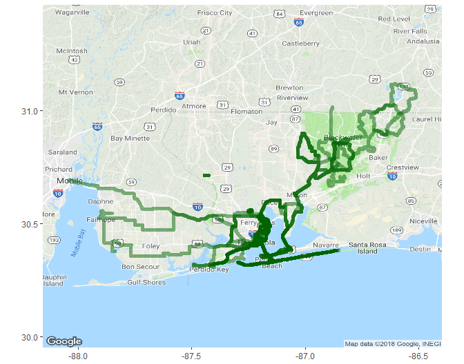
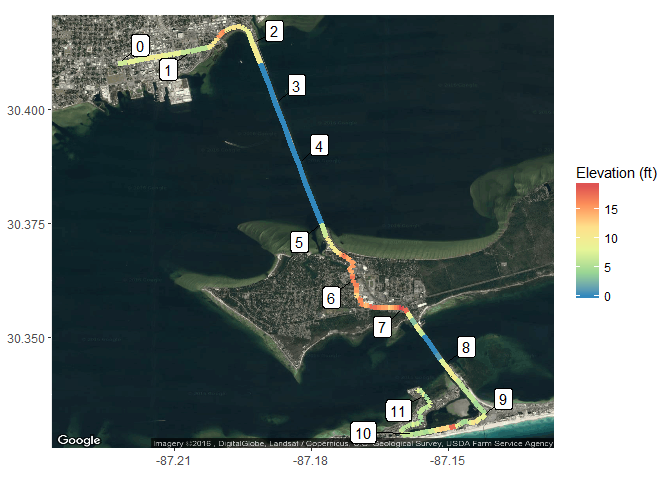
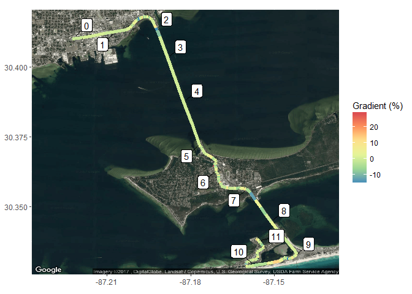
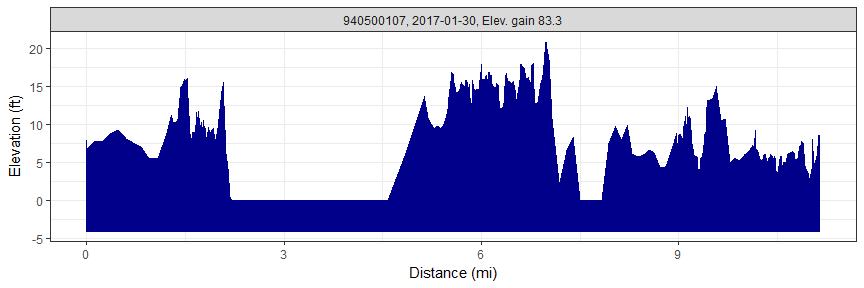
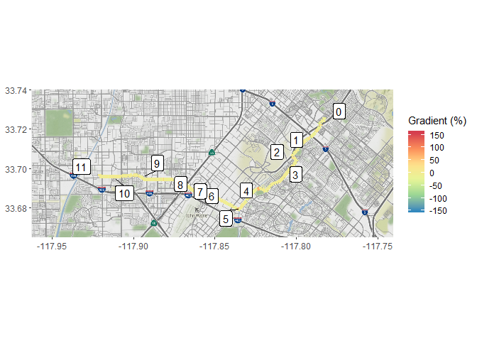

rStrava
Marcus W. Beck, mbafs2012@gmail.com, Pedro Villarroel, pedrodvf@gmail.com, Daniel Padfield, dp323@exeter.ac.uk
Linux: 
Windows:
Overview and installation
This is the development repository for rStrava, an R package to access data from the Strava API. The package can be installed and loaded as follows:
install.packages('devtools')
devtools::install_github('fawda123/rStrava')Issues and suggestions
Please report any issues and suggestions on the issues link for the repository.
Package overview
The functions are in three categories depending on mode of use. The first category of functions scrape data from the public Strava website and the second category uses the API functions or relies on data from the API functions. The second category requires an authentication token. The help files for each category can be viewed using help.search:
help.search('notoken', package = 'rStrava')
help.search('token', package = 'rStrava')Scraping functions (no token)
An example using the scraping functions:
# get athlete data for these guys
athl_fun(c(2837007, 2527465, 2140248), trace = FALSE)## $`2837007`
## $`2837007`$units
## [1] "mi" "h" "m" "ft"
##
## $`2837007`$location
## [1] "Pensacola, FL"
##
## $`2837007`$current_month
## Distance Time Elevation
## 336.30000 22.38333 1287.00000
##
## $`2837007`$monthly
## Dec 2015 Jan 2016 Feb Mar Apr May Jun Jul
## 401.5522 441.7075 346.3388 466.8045 466.8045 366.4164 461.7851 466.8045
## Aug Sep Oct Nov Dec
## 326.2612 451.7463 441.7075 326.2612 336.3000
##
## $`2837007`$year_to_date
## Distance Time Elevation Gain Rides
## 4658.7 296.8 27723.0 362.0
##
## $`2837007`$all_time
## Total Distance Total Time Total Elev Gain Total Rides
## 17418.800 1044.583 112257.000 1280.000
##
##
## $`2527465`
## $`2527465`$units
## [1] "km" "h" "m" "m"
##
## $`2527465`$location
## [1] "Buenos Aires, Ciudad Autónoma de Buenos Aires, Argentina"
##
## $`2527465`$current_month
## Distance Time Elevation
## 703.40000 35.93333 2739.00000
##
## $`2527465`$monthly
## Dec 2015 Jan 2016 Feb Mar Apr May Jun
## 394.5902 34.3122 188.7171 411.7463 411.7463 669.0878 360.2780
## Jul Aug Sep Oct Nov Dec
## 428.9024 1664.1415 411.7463 325.9659 548.9951 703.4000
##
## $`2527465`$year_to_date
## Distance Time Elevation Gain Rides
## 6130.8000 339.2667 49588.0000 163.0000
##
## $`2527465`$all_time
## Total Distance Total Time Total Elev Gain Total Rides
## 13994.8000 772.7167 169250.0000 499.0000
##
##
## $`2140248`
## $`2140248`$units
## [1] "km" "h" "m" "m"
##
## $`2140248`$location
## [1] "Falmouth, England, United Kingdom"
##
## $`2140248`$current_month
## Distance Time Elevation
## 372.20 15.75 4459.00
##
## $`2140248`$monthly
## Dec 2015 Jan 2016 Feb Mar Apr May
## 0.000000 138.074194 6.003226 78.041935 396.212903 240.129032
## Jun Jul Aug Sep Oct Nov
## 306.164516 558.300000 318.170968 54.029032 372.200000 0.000000
## Dec
## 0.000000
##
## $`2140248`$year_to_date
## Distance Time Elevation Gain Rides
## 2417.0000 100.8833 28513.0000 79.0000
##
## $`2140248`$all_time
## Total Distance Total Time Total Elev Gain Total Rides
## 6955.8000 294.7833 84843.0000 480.0000API functions (token)
Setup
These functions require a Strava account and a personal API, both of which can be obtained on the Strava website. The user account can be created by following instructions on the Strava homepage. After the account is created, a personal API can be created under API tab of profile settings. The user must have an application name (chosen by the user), client id (different from the athlete id), and an application secret to create the authentication token. Additional information about the personal API can be found here. Every API retrieval function in the rStrava package requires an authentication token (called stoken in the help documents). The following is a suggested workflow for using the API functions with rStrava.
First, create the authentication token using your personal information from your API. Replace the app_name, app_client_id, and app_secret objects with the relevant info from your account.
app_name <- 'myappname' # chosen by user
app_client_id <- 'myid' # an integer, assigned by Strava
app_secret <- 'xxxxxxxx' # an alphanumeric secret, assigned by Strava
# create the authentication token
stoken <- httr::config(token = strava_oauth(app_name, app_client_id, app_secret))Setting cache = TRUE for strava_oauth will create an authentication file in the working directory. This can be used in later sessions as follows:
stoken <- httr::config(token = readRDS('.httr-oauth')[[1]])Finally, the get_heat_map and get_elev_prof functions optionally retrieve elevation data from the Google Maps Elevation API. To use these features, an additional authentication key is required. Follow the instructions here. The key can be added to the R environment file for later use:
# save the key, do only once
cat("google_key=XXXXXXXXXXXXXXXXXXXXXXXXXXXXXXXXXXXXXX\n",
file=file.path(normalizePath("~/"), ".Renviron"),
append=TRUE)
# retrieve the key, restart R if not found
mykey <- Sys.getenv("google_key")Using the functions
The API retrieval functions are used with the token.
myinfo <- get_athlete(stoken, id = '2837007')
head(myinfo)## $id
## [1] 2837007
##
## $username
## [1] "beck_marcus"
##
## $resource_state
## [1] 3
##
## $firstname
## [1] "Marcus"
##
## $lastname
## [1] "Beck"
##
## $city
## [1] "Pensacola"An example creating a heat map of activities:
# get activities, get activities by location, plot
my_acts <- get_activity_list(stoken)
acts <- lapply(my_acts, function(x) x$location_city) %in% c('Pensacola', 'Pensacola Beach', 'Milton')
get_heat_map(my_acts, acts = which(acts), source = 'osm', col = 'darkgreen', size = 2, dist = F)
Plotting elevation and grade for a single ride:
# plot elevation along a single ride
get_heat_map(my_acts, acts = 1, alpha = 1, add_elev = T, f = 0.1, key = mykey, size = 2, col = 'Spectral', maptype = 'satellite', units = 'imperial')
# plot % gradient along a single ride
get_heat_map(my_acts, acts = 1, alpha = 1, add_elev = T, f = 0.1, as_grad = T, key = mykey, size = 2, col = 'Spectral', expand = 5, maptype = 'satellite', units = 'imperial')
Get elevation profiles for activities:
# get activities
my_acts <- get_activity_list(stoken)
get_elev_prof(my_acts, acts = 1, key = mykey, units = 'imperial')
get_elev_prof(my_acts, acts = 1, key = mykey, units = 'imperial', total = T)
License
This package is released in the public domain under the creative commons license CC0.